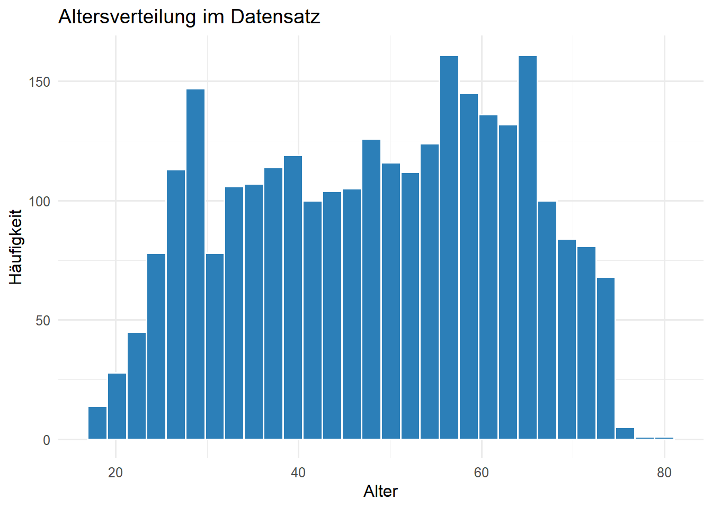
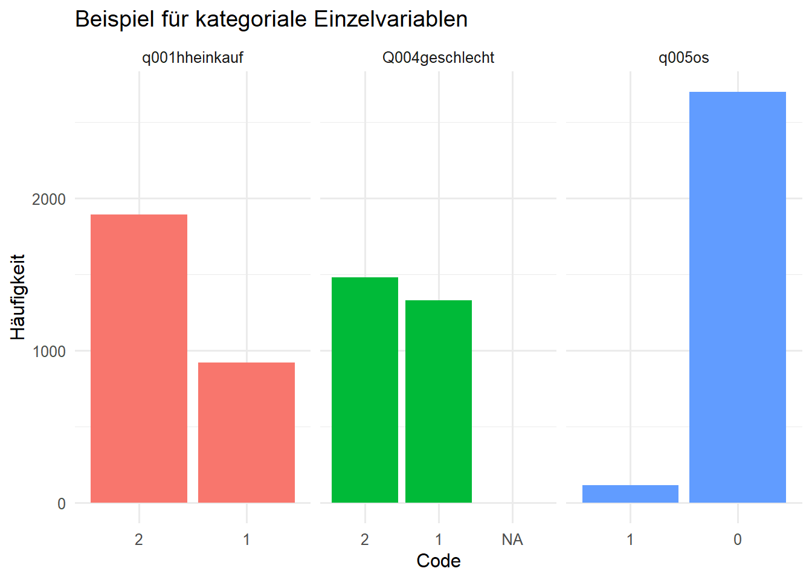
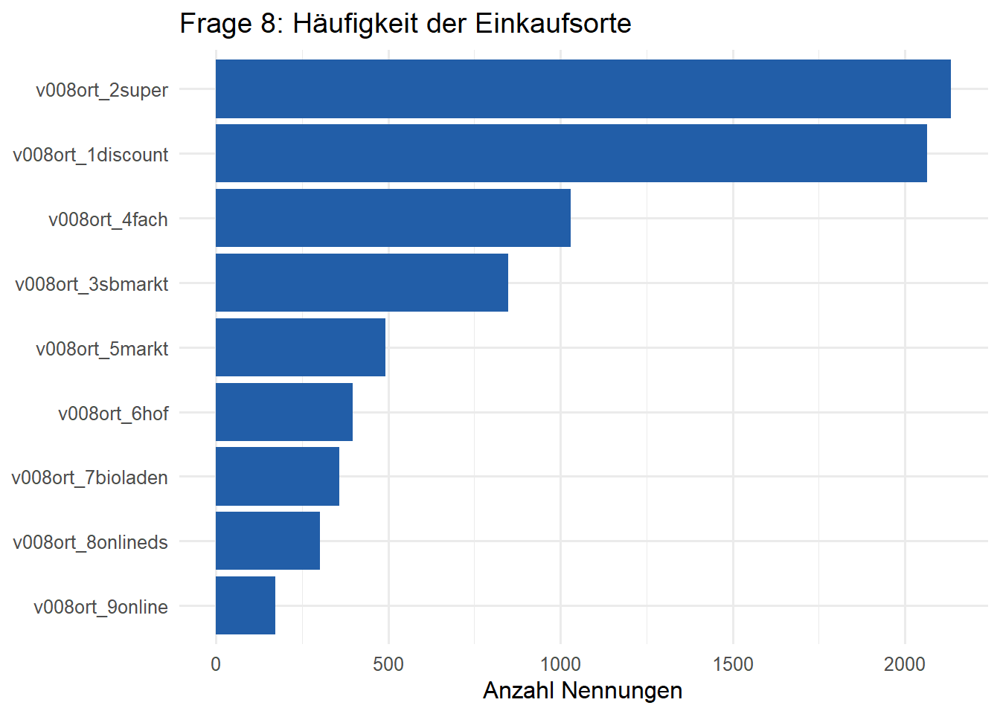
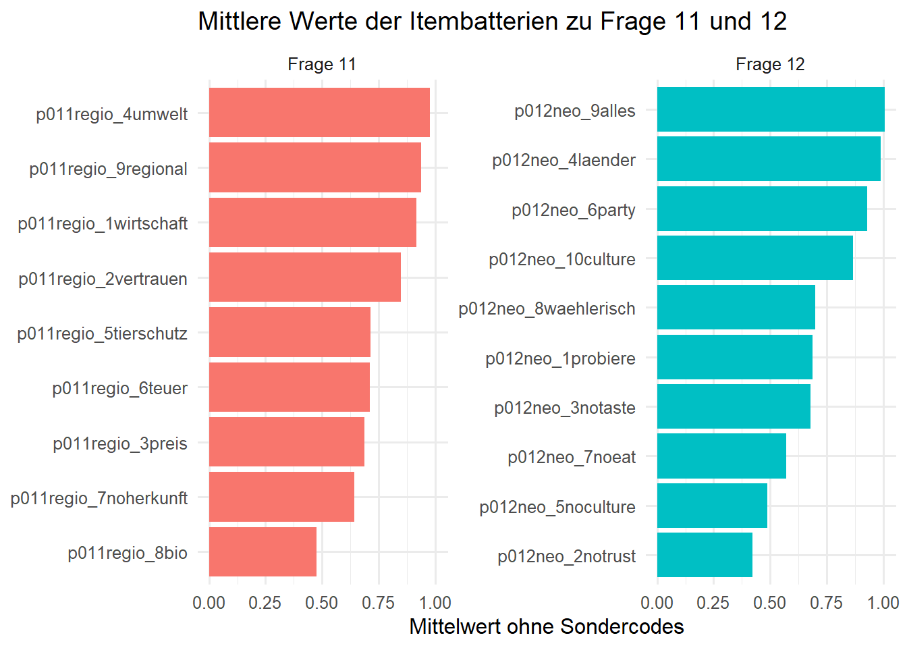
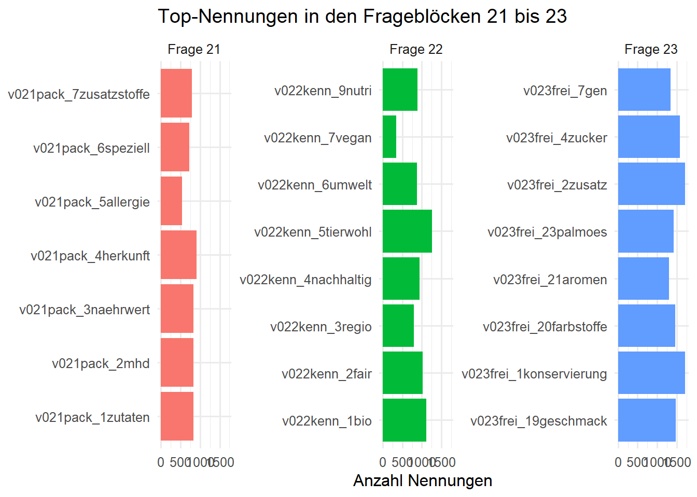
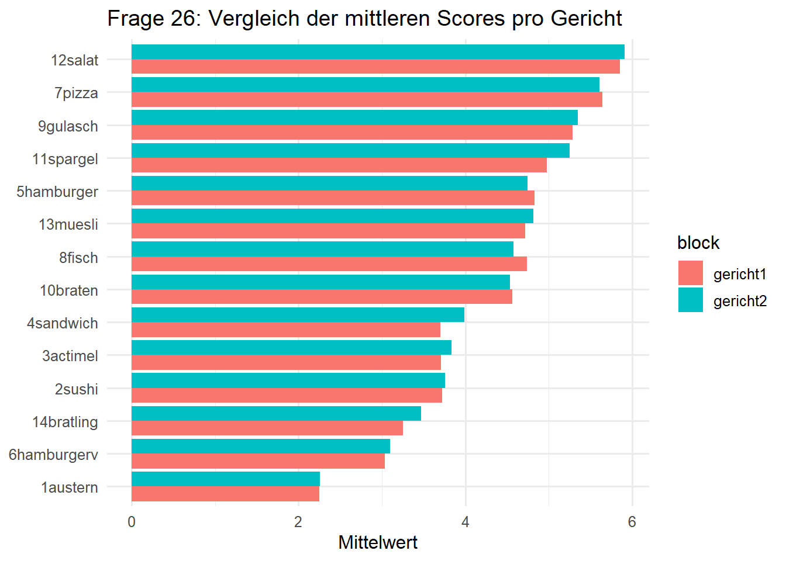
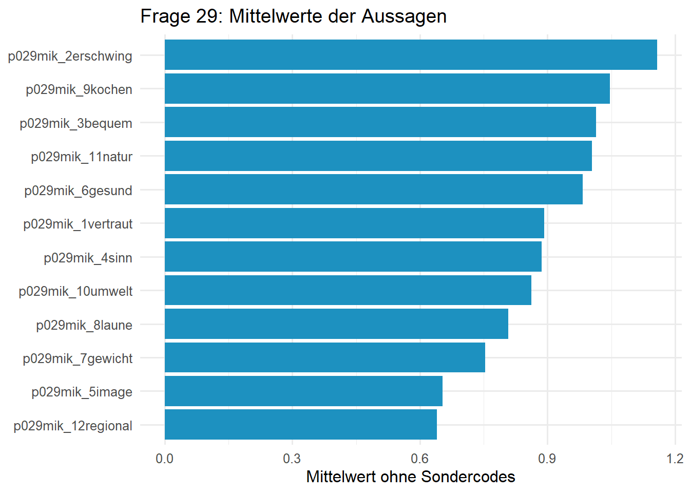

[1] 2811[1] 814Am Beispiel der Marktforschungs-Musterstudie
In dieser Übung arbeitet ihr mit einem Umfragedatensatz aus einer Marktforschungs-Musterstudie zu Schokolade und Milchalternativen. Der Fokus liegt nicht auf komplexen Modellen, sondern auf den Grundlagen guter Datenanalyse: Welche Variablen gibt es, was messen sie, welche Datentypen liegen vor, welche Wertebereiche und Missing-Codes wurden verwendet, und welche Zusammenfassungen und Visualisierungen passen zu unterschiedlichen Variablentypen?
1. Erstellt ein neues Projekt für diese Übung und öffnet es in der Entwicklungsumgebung Positron. Stellt sicher, dass ihr eine virtuelle R-Umgebung für das Projekt erstellt und aktiviert habt.
2. Installiert die folgenden Pakete in eurer virtuellen Umgebung: tidyverse, janitor und skimr. Verwendet das Metapaket pacman, damit ihr die Pakete mit einem einzigen Befehl installieren und laden könnt.
3. Ladet den Datensatz der Marktforschungs-Musterstudie auf euren Computer herunter und speichert ihn in einem Unterordner data/ in eurem Projektverzeichnis.
4. Erzeugt einen neuen Ordner scripts/ in eurem Projektverzeichnis und erstellt eine neue R-Skriptdatei explore_variables.R in diesem Ordner.
5. Lest den Datensatz mds12_schoko_milch.csv in R ein. Prüft dabei das Dateiformat, zum Beispiel Trennzeichen, Kodierung und Missing-Value-Darstellung. Speichert den Einlesecode in eurer Skriptdatei und legt direkt ein Objekt an, mit dem ihr in den folgenden Schritten weiterarbeitet.
Für die weitere Analyse reicht ein sauber eingelesener Datensatz mit expliziter Behandlung von "NA" und leeren Zellen. Da im Datensatz keine stabile Respondent:innen-ID enthalten ist, ergänzen wir gleich eine synthetische laufende ID.
[1] 2811[1] 8146. Verschafft euch einen ersten Überblick über den Datensatz. Wie viele Beobachtungen und wie viele Variablen sind enthalten? Welche Datentypen wurden beim Einlesen zugewiesen? Welche ersten Hinweise geben euch die Variablennamen über den Aufbau des Fragebogens?
Die Datei ist breit aufgebaut, also ein klassischer Umfragedatensatz mit vielen Fragen, Items und Ableitungen. Schon an den Namen sieht man unterschiedliche Frageblöcke, zum Beispiel q... für einfache Fragen, p... für Itembatterien und abgeleitete Variablen wie Q002alter oder Q004geschlecht.
Rows: 2,811
Columns: 13
$ respondent_id <int> 1, 2, 3, 4, 5, 6, 7, 8, 9, 10, 11, 12, 13, 14, 15,…
$ q001hheinkauf <dbl> 2, 1, 2, 2, 2, 2, 2, 2, 2, 2, 2, 1, 2, 1, 2, 2, 1,…
$ q002geburt <dbl> 1970, 1990, 1963, 1989, 1965, 1957, 1960, 1984, 19…
$ q003land <dbl> 1, 7, 6, 13, 4, 2, 14, 13, 1, 13, 5, 14, 9, 4, 3, …
$ q004geschlecht <dbl> 1, 1, 1, 2, 1, 1, 2, 1, 2, 2, 1, 1, 1, 1, 2, 2, 1,…
$ q005os <dbl> 0, 0, 0, 0, 0, 0, 0, 0, 0, 0, 0, 0, 0, 0, 0, 0, 0,…
$ v041nofleisch <dbl> 0, 0, 0, 1, 1, 0, 1, 0, 0, 0, 0, 0, 0, 1, 0, 0, 0,…
$ v041nofleisch_other <chr> NA, NA, NA, NA, NA, NA, NA, NA, NA, NA, NA, NA, NA…
$ v041diaet_0nodiaet <dbl> 1, 0, 1, 1, 1, 0, 0, 0, 1, 1, 1, 1, 1, 1, 0, 1, 1,…
$ v041diaet_1lowcarb <dbl> 0, 0, 0, 0, 0, 0, 0, 1, 0, 0, 0, 0, 0, 0, 0, 0, 0,…
$ v041diaet_2laktose <dbl> 0, 0, 0, 0, 0, 0, 0, 0, 0, 0, 0, 0, 0, 0, 1, 0, 0,…
$ v041diaet_3gluten <dbl> 0, 1, 0, 0, 0, 0, 0, 1, 0, 0, 0, 0, 0, 0, 0, 0, 0,…
$ v041diaet_4paleo <dbl> 0, 0, 0, 0, 0, 0, 0, 0, 0, 0, 0, 0, 0, 0, 0, 0, 0,… respondent_id q001hheinkauf q002geburt q003land
Min. : 1.0 Min. :1.000 Min. :1945 Min. : 1.000
1st Qu.: 703.5 1st Qu.:1.000 1st Qu.:1965 1st Qu.: 3.000
Median :1406.0 Median :2.000 Median :1975 Median : 9.000
Mean :1406.0 Mean :1.673 Mean :1977 Mean : 7.567
3rd Qu.:2108.5 3rd Qu.:2.000 3rd Qu.:1989 3rd Qu.:10.000
Max. :2811.0 Max. :2.000 Max. :2007 Max. :16.000
q004geschlecht q005os
Min. :1.000 Min. :0.00000
1st Qu.:1.000 1st Qu.:0.00000
Median :2.000 Median :0.00000
Mean :1.528 Mean :0.04055
3rd Qu.:2.000 3rd Qu.:0.00000
Max. :3.000 Max. :1.00000 7. Überlegt, wie in diesem Datensatz eine Beobachtung eindeutig identifizierbar gemacht werden kann. Gibt es eine bereits vorhandene Variable, die offensichtlich als Primärschlüssel taugt? Wenn nicht, wie würdet ihr das Problem praktisch lösen?
Eine gut sichtbare natürliche ID ist im Datensatz nicht vorhanden. Für die explorative Analyse ist eine synthetische laufende ID deshalb die sauberste Lösung. Damit bleiben alle Zeilen eindeutig referenzierbar.
# A tibble: 1 × 2
is_running_id n
<lgl> <int>
1 TRUE 28118. Prüft, welche Informationen ihr allein aus dem Datensatz rekonstruieren könnt und welche ihr nur mit einem Fragebogen oder Codebook sicher interpretieren könnt. Schaut euch insbesondere die Variablennamen für die Fragen 1, 2, 3, 4, 5, 8, 11, 12, 21, 22, 23, 26, 29 und 216 an.
Die Zuordnung vieler Fragen ist direkt über die Präfixe möglich. Für einige Fragen reicht der lokale CSV-Bestand aber nicht aus, um Antworttexte oder vollständige Kodierungen sicher zu rekonstruieren. Dafür bräuchtet ihr den Fragebogen oder ein Codebook.
question_prefixes <- c(
"q001", "q002", "q003", "q004", "q005",
"v008", "p011", "p012", "v021", "v022", "v023",
"p026", "p029", "d216"
)
question_lookup <- tibble(
prefix = question_prefixes,
variables = map(
prefix,
~ names(survey)[stringr::str_detect(names(survey), paste0("^", .x))]
)
) |>
mutate(n_vars = map_int(variables, length))
question_lookup |>
select(prefix, n_vars, variables)# A tibble: 14 × 3
prefix n_vars variables
<chr> <int> <list>
1 q001 1 <chr [1]>
2 q002 1 <chr [1]>
3 q003 1 <chr [1]>
4 q004 1 <chr [1]>
5 q005 1 <chr [1]>
6 v008 10 <chr [10]>
7 p011 9 <chr [9]>
8 p012 10 <chr [10]>
9 v021 7 <chr [7]>
10 v022 11 <chr [11]>
11 v023 27 <chr [27]>
12 p026 28 <chr [28]>
13 p029 12 <chr [12]>
14 d216 19 <chr [19]>In diesem Abschnitt betrachtet ihr zunächst einfache Einzelvariablen. Ziel ist, für jede Variable den Typ, den Wertebereich, Missing Values und sinnvolle Zusammenfassungen sauber zu beschreiben.
9. Analysiert die Variablen zu den Fragen 1, 2, 3, 4 und 5, also q001hheinkauf, Q002alter, q003land, Q004geschlecht und q005os. Prüft jeweils:
Legt für jede dieser Fragen einen kleinen Analyse-Tibble an, der mindestens die respondent_id und die jeweils betrachtete Variable enthält.
Q002alter ist klar metrisch. Die übrigen Variablen sind hier kategorial und sollten vor allem über Häufigkeiten beschrieben werden. Ohne Codebook können wir nicht jede Kategorie semantisch benennen, aber wir können die Struktur trotzdem sauber analysieren.
s_q001 <- survey |>
select(respondent_id, q001hheinkauf)
s_q002 <- survey |>
select(respondent_id, Q002alter)
s_q003 <- survey |>
select(respondent_id, q003land)
s_q004 <- survey |>
select(respondent_id, Q004geschlecht)
s_q005 <- survey |>
select(respondent_id, q005os)
list(
q001 = count(s_q001, q001hheinkauf, sort = TRUE),
q002 = summarise(
s_q002,
n = n(),
missing = sum(is.na(Q002alter)),
min = min(Q002alter, na.rm = TRUE),
median = median(Q002alter, na.rm = TRUE),
mean = mean(Q002alter, na.rm = TRUE),
max = max(Q002alter, na.rm = TRUE)
),
q003 = count(s_q003, q003land, sort = TRUE) |> slice_head(n = 10),
q004 = count(s_q004, Q004geschlecht, sort = TRUE),
q005 = count(s_q005, q005os, sort = TRUE)
)$q001
# A tibble: 2 × 2
q001hheinkauf n
<dbl> <int>
1 2 1892
2 1 919
$q002
# A tibble: 1 × 6
n missing min median mean max
<int> <int> <dbl> <dbl> <dbl> <dbl>
1 2811 0 18 50 48.4 80
$q003
# A tibble: 10 × 2
q003land n
<dbl> <int>
1 10 446
2 9 382
3 2 356
4 1 310
5 7 186
6 11 146
7 13 146
8 3 141
9 15 118
10 4 116
$q004
# A tibble: 3 × 2
Q004geschlecht n
<dbl> <int>
1 2 1481
2 1 1328
3 NA 2
$q005
# A tibble: 2 × 2
q005os n
<dbl> <int>
1 0 2697
2 1 114
bind_rows(
count(s_q001, code = q001hheinkauf, sort = TRUE) |> mutate(variable = "q001hheinkauf"),
count(s_q004, code = Q004geschlecht, sort = TRUE) |> mutate(variable = "Q004geschlecht"),
count(s_q005, code = q005os, sort = TRUE) |> mutate(variable = "q005os")
) |>
ggplot(aes(x = fct_inorder(as.character(code)), y = n, fill = variable)) +
geom_col(show.legend = FALSE) +
facet_wrap(~ variable, scales = "free_x") +
labs(
title = "Beispiel für kategoriale Einzelvariablen",
x = "Code",
y = "Häufigkeit"
)
Viele Fragen liegen nicht als einzelne Variable vor, sondern als Block aus mehreren dichotomen Variablen oder als Itembatterie. Diese Struktur verlangt eine andere Vorgehensweise als bei einer einfachen Einzelvariable.
10. Analysiert Frage 8, also den Block v008ort_*. Beschreibt zuerst, warum es sich hier nicht um eine einzelne kategoriale Variable, sondern um eine Mehrfachantwort-Struktur handelt. Ermittelt anschließend:
An v008ort_1discount, v008ort_2super und den weiteren Spalten erkennt man eine klassische Mehrfachnennung. Jede Option ist als eigene binäre Variable gespeichert. Für die Auswertung bringt man solche Blöcke meist in ein langes Format.
s_q008 <- survey |>
select(respondent_id, matches("^v008ort_[0-9]"))
q008_long <- s_q008 |>
pivot_longer(
cols = -respondent_id,
names_to = "item",
values_to = "value"
)
q008_summary <- q008_long |>
group_by(item) |>
summarise(
n_valid = sum(!is.na(value)),
selected = sum(value == 1, na.rm = TRUE),
share_selected = selected / n_valid,
.groups = "drop"
) |>
arrange(desc(selected))
q008_summary# A tibble: 9 × 4
item n_valid selected share_selected
<chr> <int> <int> <dbl>
1 v008ort_2super 2811 2134 0.759
2 v008ort_1discount 2811 2065 0.735
3 v008ort_4fach 2811 1029 0.366
4 v008ort_3sbmarkt 2811 848 0.302
5 v008ort_5markt 2811 493 0.175
6 v008ort_6hof 2811 396 0.141
7 v008ort_7bioladen 2811 359 0.128
8 v008ort_8onlineds 2811 303 0.108
9 v008ort_9online 2811 173 0.0615
11. Analysiert die Fragen 11 und 12, also die Blöcke p011regio_* und p012neo_*. Prüft, welche Codes als echte Antwortkategorien und welche eher als Sonder- oder Missing-Codes zu interpretieren sind. Bereitet die Daten für die Analyse so auf, dass sich die inhaltlichen Bewertungen sinnvoll zusammenfassen und visualisieren lassen.
Bei beiden Blöcken sprechen die Werteverteilungen stark dafür, dass -1 und -2 keine inhaltlichen Antwortstufen, sondern Sondercodes sind. Für Substanzanalysen sollten sie deshalb als fehlend behandelt werden, zugleich sollte man ihre Häufigkeit dokumentieren.
likert_battery_summary <- function(data, prefix) {
data |>
select(respondent_id, starts_with(prefix)) |>
pivot_longer(
cols = -respondent_id,
names_to = "item",
values_to = "value_raw"
) |>
mutate(
value_clean = if_else(value_raw %in% special_missing_codes, NA_real_, value_raw)
) |>
group_by(item) |>
summarise(
missing_special = sum(value_raw %in% special_missing_codes, na.rm = TRUE),
missing_na = sum(is.na(value_raw)),
mean_score = mean(value_clean, na.rm = TRUE),
median_score = median(value_clean, na.rm = TRUE),
.groups = "drop"
) |>
arrange(desc(mean_score))
}
q011_summary <- likert_battery_summary(survey, "p011regio_")
q012_summary <- likert_battery_summary(survey, "p012neo_")
q011_summary# A tibble: 9 × 5
item missing_special missing_na mean_score median_score
<chr> <int> <int> <dbl> <dbl>
1 p011regio_4umwelt 206 13 0.977 1
2 p011regio_9regional 267 10 0.937 1
3 p011regio_1wirtschaft 336 10 0.916 1
4 p011regio_2vertrauen 329 8 0.850 1
5 p011regio_5tierschutz 468 8 0.716 1
6 p011regio_6teuer 369 7 0.713 1
7 p011regio_3preis 693 5 0.687 1
8 p011regio_7noherkunft 525 7 0.642 0
9 p011regio_8bio 1405 6 0.477 0# A tibble: 10 × 5
item missing_special missing_na mean_score median_score
<chr> <int> <int> <dbl> <dbl>
1 p012neo_9alles 549 8 1.01 1
2 p012neo_4laender 268 5 0.989 1
3 p012neo_6party 480 8 0.930 1
4 p012neo_10culture 498 9 0.867 1
5 p012neo_8waehlerisch 947 4 0.699 1
6 p012neo_1probiere 780 9 0.688 1
7 p012neo_3notaste 921 5 0.680 0
8 p012neo_7noeat 1541 5 0.572 0
9 p012neo_5noculture 1571 8 0.488 0
10 p012neo_2notrust 1375 6 0.422 0bind_rows(
q011_summary |> mutate(block = "Frage 11"),
q012_summary |> mutate(block = "Frage 12")
) |>
ggplot(aes(x = mean_score, y = reorder(item, mean_score), fill = block)) +
geom_col(show.legend = FALSE) +
facet_wrap(~ block, scales = "free_y") +
labs(
title = "Mittlere Werte der Itembatterien zu Frage 11 und 12",
x = "Mittelwert ohne Sondercodes",
y = NULL
)
12. Analysiert die Fragen 21, 22 und 23, also die Blöcke v021pack_*, v022kenn_* und v023frei_*. Identifiziert die Struktur dieser Blöcke und vergleicht, wie häufig einzelne Optionen genannt werden. Welche Visualisierungsform eignet sich, um die wichtigsten Nennungen pro Frageblock übersichtlich zu zeigen?
Alle drei Fragen sind Mehrfachnennungen mit binären Itemvariablen. Für einen Vergleich reicht es, die Zahl der positiven Nennungen pro Item zu zählen und die Items dann innerhalb jedes Blocks zu sortieren.
binary_battery_summary <- function(data, prefix, positive_value = 1) {
data |>
select(respondent_id, starts_with(prefix)) |>
pivot_longer(
cols = -respondent_id,
names_to = "item",
values_to = "value"
) |>
group_by(item) |>
summarise(
n_valid = sum(!is.na(value)),
selected = sum(value == positive_value, na.rm = TRUE),
share_selected = selected / n_valid,
.groups = "drop"
) |>
arrange(desc(selected))
}
q021_summary <- binary_battery_summary(survey, "v021pack_")
q022_summary <- binary_battery_summary(survey, "v022kenn_")
q023_summary <- binary_battery_summary(survey, "v023frei_")
list(
q021 = q021_summary |> slice_head(n = 7),
q022 = q022_summary |> slice_head(n = 7),
q023 = q023_summary |> slice_head(n = 7)
)$q021
# A tibble: 7 × 4
item n_valid selected share_selected
<chr> <int> <int> <dbl>
1 v021pack_4herkunft 2806 905 0.323
2 v021pack_2mhd 2807 836 0.298
3 v021pack_1zutaten 2804 833 0.297
4 v021pack_3naehrwert 2806 827 0.295
5 v021pack_7zusatzstoffe 2806 785 0.280
6 v021pack_6speziell 2806 722 0.257
7 v021pack_5allergie 2808 541 0.193
$q022
# A tibble: 7 × 4
item n_valid selected share_selected
<chr> <int> <int> <dbl>
1 v022kenn_5tierwohl 2811 1264 0.450
2 v022kenn_1bio 2811 1108 0.394
3 v022kenn_2fair 2811 1015 0.361
4 v022kenn_4nachhaltig 2811 935 0.333
5 v022kenn_9nutri 2811 889 0.316
6 v022kenn_6umwelt 2811 869 0.309
7 v022kenn_3regio 2811 798 0.284
$q023
# A tibble: 7 × 4
item n_valid selected share_selected
<chr> <int> <int> <dbl>
1 v023frei_2zusatz 2794 1714 0.613
2 v023frei_1konservierung 2801 1710 0.610
3 v023frei_4zucker 2796 1586 0.567
4 v023frei_19geschmack 2793 1471 0.527
5 v023frei_20farbstoffe 2795 1460 0.522
6 v023frei_23palmoes 2800 1419 0.507
7 v023frei_7gen 2795 1344 0.481bind_rows(
q021_summary |> mutate(block = "Frage 21"),
q022_summary |> mutate(block = "Frage 22"),
q023_summary |> mutate(block = "Frage 23")
) |>
group_by(block) |>
slice_max(order_by = selected, n = 8, with_ties = FALSE) |>
ungroup() |>
ggplot(aes(x = selected, y = item, fill = block)) +
geom_col(show.legend = FALSE) +
facet_wrap(~ block, scales = "free_y") +
labs(
title = "Top-Nennungen in den Frageblöcken 21 bis 23",
x = "Anzahl Nennungen",
y = NULL
)
13. Analysiert Frage 26, also die Blöcke p026gericht1_* und p026gericht2_*. Beschreibt zunächst, was die Struktur dieser Variablenform nahelegt. Vergleicht anschließend die Verteilungen ausgewählter Items und erstellt mindestens eine Visualisierung, die zeigt, wie unterschiedlich die Gerichte bewertet oder eingeordnet wurden.
Die beiden Blöcke sprechen für zwei parallele Bewertungs- oder Rangfolgeschemata. Ohne Fragebogen können wir die Skalenrichtung nicht sicher benennen, aber wir können die Verteilungen und Mittelwerte der Items gut vergleichen.
q026_summary <- survey |>
select(
respondent_id,
starts_with("p026gericht1_"),
starts_with("p026gericht2_")
) |>
pivot_longer(
cols = -respondent_id,
names_to = "item",
values_to = "value"
) |>
mutate(
block = if_else(str_detect(item, "^p026gericht1_"), "gericht1", "gericht2"),
dish = str_remove(item, "^p026gericht[12]_")
) |>
group_by(block, dish) |>
summarise(
n_valid = sum(!is.na(value)),
mean_score = mean(value, na.rm = TRUE),
median_score = median(value, na.rm = TRUE),
.groups = "drop"
)
q026_summary |> arrange(block, desc(mean_score))# A tibble: 28 × 5
block dish n_valid mean_score median_score
<chr> <chr> <int> <dbl> <dbl>
1 gericht1 12salat 1381 5.86 6
2 gericht1 7pizza 1384 5.64 6
3 gericht1 9gulasch 1383 5.28 6
4 gericht1 11spargel 1378 4.98 6
5 gericht1 5hamburger 1379 4.83 5
6 gericht1 8fisch 1383 4.74 5
7 gericht1 13muesli 1378 4.71 5
8 gericht1 10braten 1382 4.56 5
9 gericht1 2sushi 1383 3.72 4
10 gericht1 3actimel 1381 3.71 4
# ℹ 18 more rows
14. Analysiert Frage 29, also den Block p029mik_*. Untersucht, ob es sich um eine Itembatterie handelt, welche Antwortwerte vorkommen und wie stark die einzelnen Aussagen im Mittel ausfallen. Visualisiert das Ergebnis so, dass die wichtigsten Unterschiede zwischen den Aussagen schnell erkennbar sind.
Auch hier liegt eine klassische Batterie vor. Wieder spricht die Verteilung dafür, dass -1 und -2 Sondercodes sind, die für die Skalenbeschreibung nicht in den Mittelwert eingehen sollten.
# A tibble: 12 × 5
item missing_special missing_na mean_score median_score
<chr> <int> <int> <dbl> <dbl>
1 p029mik_2erschwing 130 7 1.16 1
2 p029mik_9kochen 155 4 1.05 1
3 p029mik_3bequem 148 12 1.01 1
4 p029mik_11natur 242 6 1.00 1
5 p029mik_6gesund 162 14 0.983 1
6 p029mik_1vertraut 202 16 0.893 1
7 p029mik_4sinn 270 9 0.887 1
8 p029mik_10umwelt 330 7 0.862 1
9 p029mik_8laune 498 7 0.808 1
10 p029mik_7gewicht 699 8 0.753 1
11 p029mik_5image 703 10 0.653 1
12 p029mik_12regional 606 7 0.640 0
15. Analysiert Frage 216, also den Block d216medien_*. Prüft zunächst den Typ dieser Variablenstruktur und beschreibt anschließend, welche Medienkanäle im Datensatz am häufigsten genannt oder genutzt werden. Wählt eine Visualisierung, die die wichtigsten Kanäle klar vergleichbar macht.
Die d216medien_*-Variablen sind kein reiner Ja/Nein-Block, sondern offenbar eine gestufte Nutzungs- oder Intensitätsskala. Für einen ersten Überblick reicht es, die Werteverteilungen je Item zu inspizieren und die Mittelwerte vergleichend darzustellen.
q216_summary <- survey |>
select(respondent_id, starts_with("d216medien_")) |>
pivot_longer(
cols = -respondent_id,
names_to = "item",
values_to = "value"
) |>
group_by(item) |>
summarise(
n_valid = sum(!is.na(value)),
mean_score = mean(value, na.rm = TRUE),
median_score = median(value, na.rm = TRUE),
.groups = "drop"
) |>
arrange(desc(mean_score))
q216_summary# A tibble: 19 × 4
item n_valid mean_score median_score
<chr> <int> <dbl> <dbl>
1 d216medien_5radio 1356 2.90 4
2 d216medien_12online 1367 2.60 3
3 d216medien_1tvoef 1372 2.58 3
4 d216medien_13youtube 1366 2.52 3
5 d216medien_2tvprivat 1370 2.45 3
6 d216medien_4tvstream 1365 2.33 3
7 d216medien_19facebook 1367 2.16 3
8 d216medien_6radiostream 1362 1.99 2
9 d216medien_17insta 1368 1.98 2
10 d216medien_3tvkultur 1369 1.77 2
11 d216medien_7printlokal 1371 1.75 1
12 d216medien_14podcats 1366 1.27 1
13 d216medien_10printtv 1364 1.04 0
14 d216medien_15blogs 1361 1.02 1
15 d216medien_16gaming 1365 1.01 0
16 d216medien_8printquali 1369 0.980 1
17 d216medien_18tiktok 1369 0.950 0
18 d216medien_11printspezial 1361 0.844 0
19 d216medien_9printstyle 1369 0.621 016. Fasst zusammen, welche grundsätzlichen Variablentypen euch in diesem Datensatz begegnen. Nennt für jeden Typ mindestens ein Beispiel aus der Übung und erläutert kurz, welche Kennzahlen und Visualisierungen jeweils gut dazu passen.
Im Datensatz begegnen euch mindestens vier wichtige Formen:
Q002alterQ004geschlechtv022kenn_*p011regio_*Für metrische Variablen sind Histogramme und Lageparameter sinnvoll, für kategoriale Einzelvariablen Häufigkeitstabellen und Balkendiagramme, für Mehrfachnennungen sortierte Vergleichsdiagramme und für Itembatterien aggregierte Skalenübersichten oder itemweise Mittelwertvergleiche.
17. Diskutiert, warum Sondercodes wie -1 und -2 in Umfragedaten analytisch problematisch sind, wenn man sie unreflektiert wie normale Werte behandelt. Was würdet ihr in einer dokumentierten Analyse tun, um mit solchen Codes sauber umzugehen?
Sondercodes verzerren Kennzahlen und Visualisierungen, wenn man sie wie normale Antwortstufen behandelt. Ein Mittelwert über 1, 2, -1, -2 ist inhaltlich unsinnig. Sauber ist deshalb:
NA umwandeln18. Überlegt abschließend, was euch für eine wirklich publikationsfähige Analyse dieser Variablen noch fehlt. Welche zusätzlichen Informationen aus Fragebogen, Feldbericht oder Codebook würdet ihr unbedingt anfordern, bevor ihr inhaltliche Schlussfolgerungen veröffentlicht?
Für eine veröffentlichungsfähige Analyse reichen die Rohvariablennamen nicht aus. Zentral wären insbesondere:
Erst damit lassen sich die Ergebnisse nicht nur technisch korrekt, sondern auch inhaltlich belastbar interpretieren.
Zu diesem Experiment gibt es folgendes Zusatzmaterial: